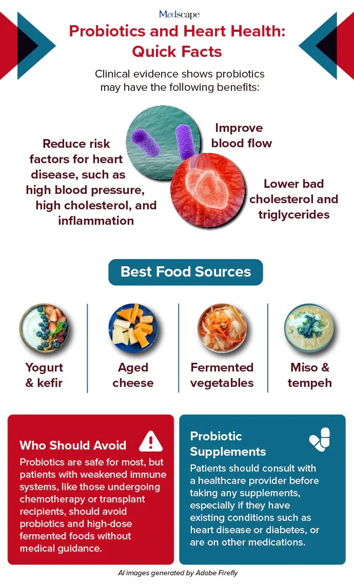

Prebiotics are non-digestible fibers which feed the good bacteria in your gut.
Probiotics are live bacteria that make up the beneficial portion of your gut microbiome.
#prebioticsHD #probioticsHD #microbiomeHD

A short post defining prebiotics as non-digestible fibers feeding beneficial gut bacteria and probiotics as live bacteria that make up the beneficial portion of the gut microbiome.
Prebiotics are non-digestible fibers which feed the good bacteria in your gut.
Probiotics are live bacteria that make up the beneficial portion of your gut microbiome.
#prebioticsHD #probioticsHD #microbiomeHD
Louis shares a 2016 randomized double-blind trial in which 12 weeks of daily Lactobacillus and Bifidobacterium probiotics yielded a moderate but significant improvement in Alzheimer's patients' cognitive scores. It was a small trial.

Louis shares an ATVB editorial describing statin-induced gut microbiota changes as a candidate mechanism for statin-associated new-onset type 2 diabetes. The editorial says causality still needs larger sequencing studies. Louis adds that in JUPITER, high-dose rosuvastatin raised A1C by 0.1, bringing diabetes diagnosis about 5.4 weeks earlier over 2 years, a small but real effect.
Louis asks whether group members take Akkermansia probiotics, often advertised as a natural GLP-1 booster, and points to a Harvard Medical School report linking Akkermansia levels in the gut to poor bone health. No numbers are given in the post.

Louis shares a Medscape item saying that certain probiotics can lower cholesterol, reduce inflammation and support heart and circulatory health. No details are given in the post.
Louis shares a 2023 Frontiers in Nutrition randomized controlled pilot study testing kombucha tea as an anti-hyperglycemic agent in people with diabetes. The report says kombucha significantly lowered fasting blood glucose, but it is a small pilot.
Louis asks whether group members take Eliquis and how supplements interact with it, since some supplements add to the anticoagulant effect and it is metabolized by CYP3A4. In an edit he reports his mother's calf DVT diagnosis was wrong: repeat ultrasound and D-dimer in a vascular clinic showed clear veins, noting ultrasound alone is only about 60% accurate for DVT.